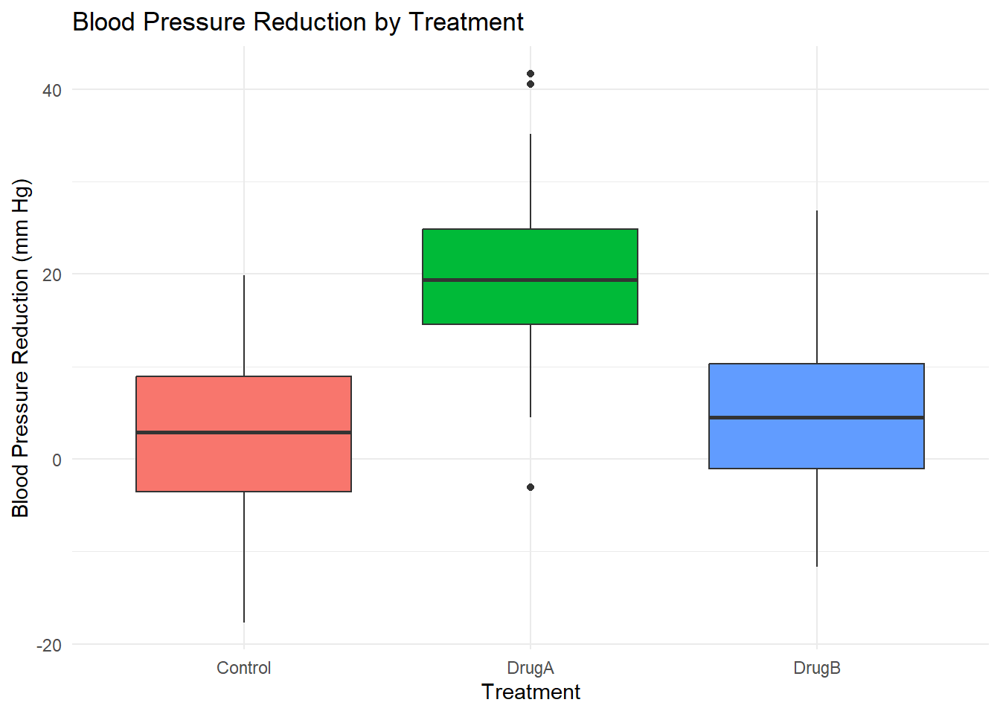
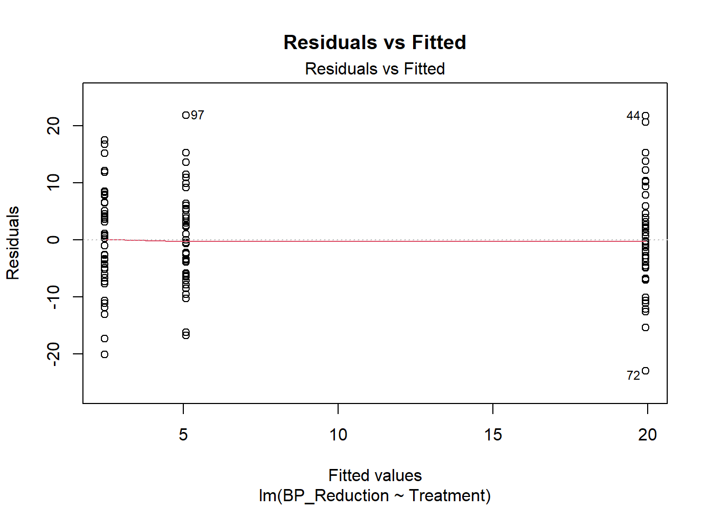
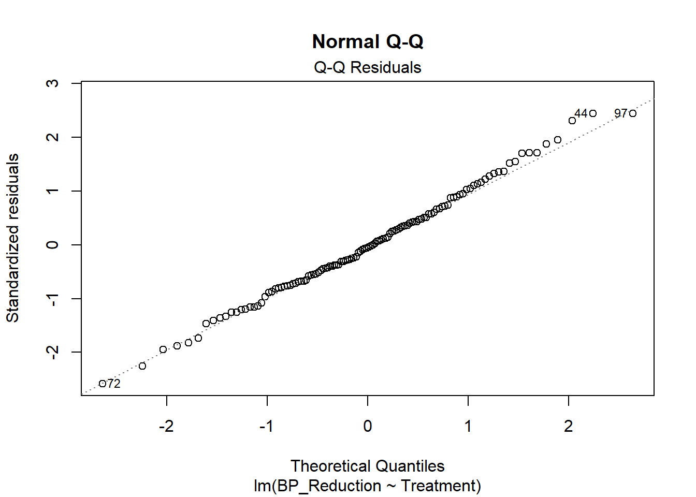

# Generating data for the single-factor experimental design
set.seed(123)
control <- rnorm(40, mean = 2, sd = 10)
drugA <- rnorm(40, mean = 20, sd = 10)
drugB <- rnorm(40, mean = 5, sd = 10)
# Combining data into a data frame
data_oneway <- data.frame(
Treatment = factor(rep(c("Control", "DrugA", "DrugB"), each = 40),
levels = c("Control", "DrugA", "DrugB")),
BP_Reduction = c(control, drugA, drugB)
)Beyond Linear Regression Lab 1: Fixed Effects Model for the One-Way Layout
Example: Effect of Three Different Drug Treatments on Blood Pressure Reduction
In this lab, we will examine the effect of three different drug treatments (Control, Drug A, and Drug B) on blood pressure reduction in patients. The data for this example are hypothetical and will be created through simulation:
The above R chunk simulates hypothetical results for 120 parients (40 per treatment group) and stores the results in the data frame data_oneway that consists of the following two columns:
Treatment: Factor variable indicating the treatment group.BP_Reduction: Numeric variable representing blood pressure reduction (in mm Hg).
Exploratory Data Analysis
To understand the distribution of blood pressure reduction across treatment groups, we start by creating a boxplot:
# Visualizing the results
library(ggplot2)
ggplot(data_oneway, aes(x = Treatment, y = BP_Reduction, fill = Treatment)) +
geom_boxplot() +
labs(title = "Blood Pressure Reduction by Treatment",
x = "Treatment", y = "Blood Pressure Reduction (mm Hg)") +
theme_minimal() +
theme(legend.position = "none")
We also calculate some summary statistics:
# Summarizing data
library(dplyr)
summary_stats <- data_oneway %>%
group_by(Treatment) %>%
summarise(
Mean_BP_Reduction = mean(BP_Reduction),
SD_BP_Reduction = sd(BP_Reduction)
)
summary_stats# A tibble: 3 × 3
Treatment Mean_BP_Reduction SD_BP_Reduction
<fct> <dbl> <dbl>
1 Control 2.45 8.98
2 DrugA 19.9 9.60
3 DrugB 5.08 8.44Performing a One-Way ANOVA
Model Specification
Using effects coding (see @nte-codings), the one-way Analysis of Variance (ANOVA) model can be specified as:
\[ Y_{ij} = \mu + \tau_i + \epsilon_{ij} \]
where:
- \(Y_{ij}\): The blood pressure reduction for the \(j\)-th patient in the \(i\)-th treatment group.
- \(\mu\): The overall mean blood pressure reduction.
- \(\tau_i\): The effect of the \(i\)-th treatment (deviation from the overall mean).
- \(\epsilon_{ij}\): The error term, assumed to be independently and normally distributed with mean zero and constant variance.
Understanding Coding Schemes
In regression models, categorical variables are represented using coding schemes. Two common coding schemes are:
Dummy Coding (Treatment Coding)
Description
- Compares each level of the factor to a reference level.
- In R, this is the default coding scheme.
- The first category is used as the reference level (unless specified otherwise).
- The intercept represents the mean of the reference group.
- Coefficients represent differences from the reference group.
Example of Dummy Coding in R (for a factor with three levels A, B, C)
| Level | Dummy Variable for B | Dummy Variable for C |
|---|---|---|
| A | 0 | 0 |
| B | 1 | 0 |
| C | 0 | 1 |
- Interpretation:
- Intercept: Mean of the reference group (A).
- Coefficient for B: Difference between mean of group A and group B.
- Coefficient for C: Difference between mean of group A and group C.
Effects Coding (Deviation Coding)
Description
- Compares each level of the factor to the overall mean.
- The sum of the coefficients equals zero.
- The intercept represents the overall mean.
- Coefficients represent deviations from the overall mean.
Example of Effects Coding in R (for a factor with three levels A, B, C)
| Level | Effects Code for A | Effects Code for B |
|---|---|---|
| A | 1 | 0 |
| B | 0 | 1 |
| C | -1 | -1 |
- Interpretation:
- Intercept: Overall mean of all groups.
- Coefficient for A: Deviation of group A’s mean from the overall mean.
- Coefficient for B: Deviation of group B’s mean from the overall mean.
- Coefficient for C: Can be calculated as \(-(\beta_{\text{A}} + \beta_{\text{B}})\) since the sum of coefficients is zero.
Changing Coding Schemes in R
To change the coding scheme globally to effects coding:
# Set contrasts to effects coding globally
options(contrasts = c("contr.sum", "contr.poly")) # Effects codingTo reset the coding scheme to the default dummy coding:
# Reset contrasts to default dummy coding
options(contrasts = c("contr.treatment", "contr.poly")) # Dummy codingModel Estimation
We can fit the one-way ANOVA model using the lm() function:
options(contrasts = c("contr.sum", "contr.poly")) # Effects coding
# Fitting the model with effects coding
model_oneway <- lm(BP_Reduction ~ Treatment, data = data_oneway)
summary(model_oneway)
Call:
lm(formula = BP_Reduction ~ Treatment, data = data_oneway)
Residuals:
Min 1Q Median 3Q Max
-23.0245 -6.0627 -0.4452 5.5324 21.7948
Coefficients:
Estimate Std. Error t value Pr(>|t|)
(Intercept) 9.1544 0.8232 11.121 < 2e-16 ***
Treatment1 -6.7026 1.1642 -5.757 7.01e-08 ***
Treatment2 10.7784 1.1642 9.258 1.22e-15 ***
---
Signif. codes: 0 '***' 0.001 '**' 0.01 '*' 0.05 '.' 0.1 ' ' 1
Residual standard error: 9.018 on 117 degrees of freedom
Multiple R-squared: 0.4276, Adjusted R-squared: 0.4179
F-statistic: 43.71 on 2 and 117 DF, p-value: 6.666e-15ANOVA Table
To test whether the effect of treatment is statistically significant, we use the anova() function to obtain the ANOVA table:
# ANOVA table
anova_results <- anova(model_oneway)
anova_resultsAnalysis of Variance Table
Response: BP_Reduction
Df Sum Sq Mean Sq F value Pr(>F)
Treatment 2 7108.5 3554.2 43.707 6.666e-15 ***
Residuals 117 9514.3 81.3
---
Signif. codes: 0 '***' 0.001 '**' 0.01 '*' 0.05 '.' 0.1 ' ' 1Estimated Marginal Means
Estimated marginal means, also known as least-squares means, are model-based means that represent the predicted (or expected) response at each level of a factor, averaged over the levels of other variables in the model.
In the context of a one-way ANOVA, where there is only one factor (e.g., treatment group), the estimated marginal means are equal to the observed group means. In more complex models with multiple factors, estimated marginal means provide predicted group means that are averaged over the levels of these additional factors. For example, in a model with both treatment and age as factors, the estimated marginal means for the treatment groups show the treatment means averaged over age, illustrating what these group means are expected to be at specific values of age (or averaged over a grid of age values).
We can calculate the estimated marginal means using the emmeans() function from the emmeans package:
# Obtain estimated marginal means
library(emmeans)
emms <- emmeans(model_oneway, ~ Treatment)
emms Treatment emmean SE df lower.CL upper.CL
Control 2.45 1.43 117 -0.372 5.28
DrugA 19.93 1.43 117 17.109 22.76
DrugB 5.08 1.43 117 2.255 7.90
Confidence level used: 0.95 Pairwise comparisons
Since we found a significant treatment effect, we will conduct pairwise comparisons of the estimated marginal means to identify which specific treatment groups differ significantly from one another. We perform these pairwise comparisons using the contrast() function from the emmeans package. To account for the increased risk of Type I error due to multiple comparisons, we apply the Bonferroni correction to adjust the p-values, ensuring that the overall significance level remains controlled.
# Performing post-hoc analysis with emmeans
contrast(emms, method="pairwise", adjust="Bonferroni") contrast estimate SE df t.ratio p.value
Control - DrugA -17.48 2.02 117 -8.669 <.0001
Control - DrugB -2.63 2.02 117 -1.303 0.5857
DrugA - DrugB 14.85 2.02 117 7.367 <.0001
P value adjustment: bonferroni method for 3 tests Model Diagnostics
To assess the adequacy of the fitted model, we create two diagnostic plots:
- Residuals vs Fitted Plot: Used to assess homoscedasticity (constant variance) for the errors. A random scatter of residuals around zero indicates equal variance.
- Normal Q-Q Plot: Used to assess normality of the errors. Residuals following the reference line suggest normally distributed errors.
# Residuals vs Fitted
plot(model_oneway, which = 1, main = "Residuals vs Fitted")
# Normal Q-Q
plot(model_oneway, which = 2, main = "Normal Q-Q")
Reporting
A one-way ANOVA was conducted to compare the effect of three treatments on blood pressure reduction. There was a statistically significant effect of treatment on blood pressure reduction [F(2, 117) = 43.71, p < 0.001]. Estimated marginal means indicated that Drug A (M = 19.93 mm Hg, 95% CI = [17.11 mm Hg, 22.76 mm Hg]) resulted in significantly greater blood pressure reduction than both the Control group (M = 2.45 mm Hg, 95% CI = [-0.37 mm Hg, 5.28 mm Hg], p < 0.001) and Drug B (M = 5.08 mm Hg, 95% CI = [2.26 mm Hg, 7.90 mm Hg], p < 0.001). There was no significant difference between the Control group and Drug B (p = 0.586). P-values were adjusted for multiple testing using the Bonferroni correction.